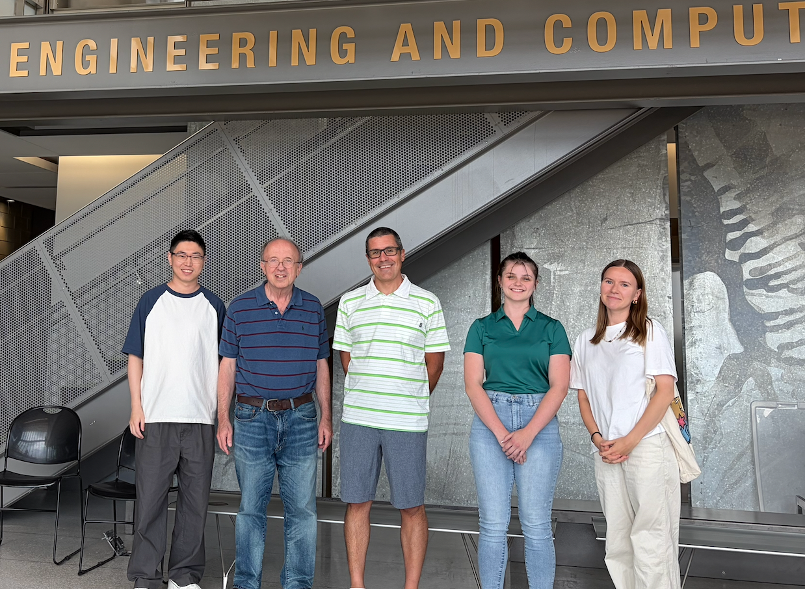

Join & Contact
Opportunities at TCRL
We welcome motivated students and collaboration opportunities in materials science, tribology, lubrication, corrosion, and surface engineering.
Join Us

Research Openings
Graduate Students
We are actively recruiting graduate students to join our research team. We currently have one funded Ph.D. position in materials tribology, lubrication, and corrosion. Students with backgrounds in materials science, mechanical engineering, chemistry, or related fields are welcome to apply.
Undergraduate Students
Undergraduate students interested in gaining research experience in tribology, lubrication, corrosion, or surface engineering are welcome to contact Dr. Wang to discuss potential opportunities.
To inquire about research opportunities, please email Dr. Wang and include a current CV and copies of your transcripts.
Email Dr. WangContact Information
Department of Mechanical Engineering
Engineering Center, Room 408
115 Library Drive
Rochester, MI 48309
wenbowang@oakland.edu
+1 248 370 2657